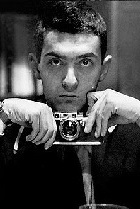
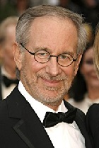

|
1º Stanley Kubrick |
|
|  |
Um mestre do suspense, mistérios e em retratar o sadismo o qual os seres humanos podem chegar.
O diretor criou muitos filmes épicos. Os mais conhecidos dele pelo público são:
- 2001: Uma Odisseia no Espaço - O Iluminado - Laranja Mecânica |
|
2º Martin Scorsese |
|
|
Filmes sólidos, duros e que retratam a realidade deturpada. Scorcese tem muitos filmes que fizeram grande sucesso.
- Taxi Driver - O Goodfellas - O Lobo de Wall Street |
|
|
3º Christopher Nolan |
|
|
Seus primeiros filmes (The Following e Amnésia) são inquietantes e totalmente curiosos.
Deste então, Nolan ficou cada vez mais conhecido por suas histórias geniais, cheias de reviravoltas e detalhes que dão um nó no cérebro.
- A Origem - Amnésia - Interstelar |
|
|
4º Os Irmãos Coen (Joel e Ethan Coen) |
|
|
Thrillers, dramas e histórias policiais geniais são com esses dois irmãos mesmo.
Seus filmes apresentam personagens fascinantes e um clima um tanto cômico e surreal – mas não tanto, eles apenas deturpam levemente a realidade em suas histórias cruéis.
- Onde os Fracos Não tem Vez - O Grande Lebowski - Fargo |
|
|
5º Steven Spielberg |
|
|  |
Conhecido por ter uma vasta lista de filmes excepcionais, Speilberg é um dos gigantes do cinema tanto em questão de efeitos especiais, quanto em roteiro, produção e direção.
- Tubarão - A Lista de Schindler - O Resgate do Soldado Ryan |